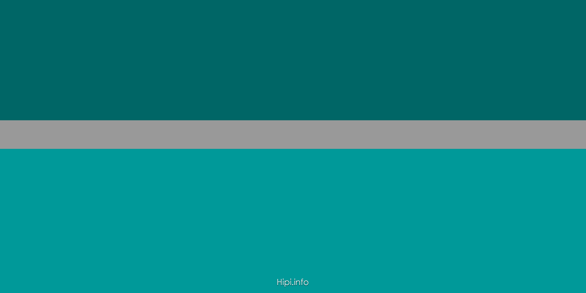

About Me
- I was born and raised in Seattle
- I participate in allot of outdoor activities that Seattle has to offer; hiking, snowboarding, kayaking
- I love to traveling, exploring new places
- I express myself creativly through music, i been playing piano since 2015
Education
I graduated from Edmonds Community College in the summer of 2017 with my Associates in Art(Direct Transfer degree).
I tranfered to the University of Washington Bothell in the following Fall.
Currently, im a junior at The University of Washington Bothell studying computer science.
Work
While Im going to school I also work part-time for the Department of Social and Health Services (DSHS). I assist people
with mental and physical disabilities, I teach them the skills to be as independent in there daily lives as possible.
Between working and going to school full time i like to give back to my community. I currently vollenteer at PAWS
a local animal shelter in lynnwood,WA. I have been involved there since 2016.
Future Plans
Looking to the future, after I obtained my Bacholors degree in Computer Science and Software Engineering, I plan to begin my professional career. I have
Area of Computers scince that Im interested in as a career path are jobs in Web Development, Software Engenneering, UX/UI designing. Just to name a few.